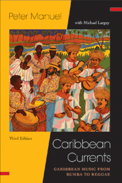

<body bgcolor="#FFFFFF" text="#000000" link="#0000FF" vlink="#CC0000" alink="#CC0000"><center><hr width="350" size="1" align="center" noshade>The classic introduction to the Caribbean's popular music brought up to date<hr width="350" size="1" align="center" noshade><p><a href="https://cdcshoppingcart.uchicago.edu/Cart/ChicagoBook.aspx?ISBN=&&PRESS=temple" target="_top">Buy this book!</a> | <a href="https://cdcshoppingcart.uchicago.edu/Cart/Cart.aspx?PRESS=temple" target="_top">View Cart</a> | <a href="https://cdcshoppingcart.uchicago.edu/Cart/Cart.aspx?PRESS=temple" target="_top">Check Out</a></p><p></p></center><!--none//--><h1 class = "booktitle">Caribbean Currents</h1> <h1 class = "subtitle">Caribbean Music from Rumba to Reggae</h1>
<h3>Peter Manuel with Michael Largey</h3>
paper: $34.95, Sep 16<BR>EAN:&nbsp;978-1-4399-1400-7<BR><font color=#990033>Available</FONT><font size=-7><br>&nbsp;</font></p><p class="info">cloth: $99.50, Sep 16<BR>EAN:&nbsp;978-1-4399-1399-4<BR><font color=#990033>Available</FONT><font size=-7><br>&nbsp;</font></p><p class="info">e-book: $34.95, Sep 16<BR>EAN:&nbsp;978-1-4399-1401-4<BR><font color=#990033>Available</FONT><font size=-7><br>&nbsp;</font></p></p></td></tr></table>
<BR> <p class="info">360 pp<BR> 6 x 9<BR> 39 line drawings, 51 halftones, 1 maps <p class="info"><font size=-7>&nbsp;</font></p><p class="info">
</P><BLOCKQUOTE><p>
Praise for the Second Edition of <i>Caribbean Currents
<br /></i>"The [second] edition addresses the most important and significant new developments in the 21st century Caribbean, and will be welcomed by those who enjoyed the original due to the considerable additions and enhancements in the revised edition. . . . [It is] undoubtedly a valuable resource."-<b><i>Ethnomusicology</i></b>
<br></BLOCKQUOTE>
<p>
First published in 1995, <i>Caribbean Currents</i> has become the definitive guide to the distinctive musics of this region of the world. This third edition of the award-winning book is substantially updated and expanded, featuring thorough coverage of new developments, such as the global spread of reggaeton and bachata, the advent of music videos, the restructuring of the music industry, and the emergence of new dance styles. It also includes many new illustrations and links to accompanying video footage.<br>
<p>The authors succinctly and perceptively situate the musical styles and developments in the context of themes of gender and racial dynamics, sociopolitical background, and diasporic dimensions.<i> Caribbean Currents</i> showcases the rich and diverse musics of Cuba, Puerto Rico, the Dominican Republic, Jamaica, Trinidad, the French Caribbean, the lesser Antilles, and their transnational communities in the United States and elsewhere to provide an engaging panorama of this most dynamic aspect of Caribbean culture.
<br>
<P CLASS="top"><A HREF="#top">BACK TO TOP</A></P>&nbsp;<h2 class="inpageheading"><A NAME="excerpt"></a>Excerpt</h2><p>
Read the Preface and the Introduction (pdf).
<br>
<P CLASS="top"><A HREF="#top">BACK TO TOP</A></P>
<BR>&nbsp;
&nbsp;<P>
<h2 class="inpageheading"><A NAME="contents"></a>Contents</h2><P><SPAN STYLE="font-family: 'Verdana';font-size: 13px;" >Note on the Accompanying Online Videos<BR>Preface to the Third Edition<BR>The Caribbean at a Glance (Country, Capital, Estimated 2015 Country Population)<BR><BR>1. Introduction: The Caribbean Crucible<BR></SPAN><SPAN STYLE="font-family: 'Verdana';font-size: 13px;font-style:italic;" >The Amerindian Heritage &bull; The African Heritage &bull; Patterns of Musical Retention &bull; The European Heritage &bull;&nbsp;Creolization &bull;&nbsp;Further Reading<BR></SPAN><SPAN STYLE="font-family: 'Verdana';font-size: 13px;" ><BR>2. Cuba<BR></SPAN><SPAN STYLE="font-family: 'Verdana';font-size: 13px;font-style:italic;" >An Evening in Havana, 2014 &bull;&nbsp;The Cuban Crucible &bull;&nbsp;African-Derived Musics &bull;&nbsp;Rumba &bull;&nbsp;Music in Santiago de Cuba &bull;&nbsp;European-Derived Musics &bull;&nbsp;The </SPAN><SPAN STYLE="font-family: 'Verdana';font-size: 13px;" >Son</SPAN><SPAN STYLE="font-family: 'Verdana';font-size: 13px;font-style:italic;" > and Modern Cuban Dance Music &bull;&nbsp;&quot;Socialism with </SPAN><SPAN STYLE="font-family: 'Verdana';font-size: 13px;" >Pachanga</SPAN><SPAN STYLE="font-family: 'Verdana';font-size: 13px;font-style:italic;" >&quot;? &bull;&nbsp;The &quot;Special Period&quot; and Its Special Music &bull;&nbsp;Miami Comes Alive &bull;&nbsp;Further Reading<BR></SPAN><SPAN STYLE="font-family: 'Verdana';font-size: 13px;" ><BR>3.Puerto Rico<BR></SPAN><SPAN STYLE="font-family: 'Verdana';font-size: 13px;font-style:italic;" >Puerto Rico and Cuba: &quot;The Two Wings of the Same Bird&quot; &bull;&nbsp;European-Derived Musics &bull;&nbsp;The Fiesta Patronal de Santiago Ap&oacute;stol at Lo&iacute;za Aldea &bull;&nbsp;Plena and Bomba in the Dancehall &bull;&nbsp;Music and the Puerto Rican Diaspora &bull;&nbsp;Music and Island Identity under &quot;Colonialism Lite&quot; &bull;&nbsp; Further Reading<BR></SPAN><SPAN STYLE="font-family: 'Verdana';font-size: 13px;" ><BR>4. Salsa, Reggaeton, and Beyond<BR></SPAN><SPAN STYLE="font-family: 'Verdana';font-size: 13px;font-style:italic;" >The </SPAN><SPAN STYLE="font-family: 'Verdana';font-size: 13px;" >Son</SPAN><SPAN STYLE="font-family: 'Verdana';font-size: 13px;font-style:italic;" > Sires a Son &bull; Ruben Blades: The Cutting Edge &bull;&nbsp;Style and Structure &bull;&nbsp;Salsa Lite? &bull;&nbsp;The New Millennium: Holding Pattern or Death Spiral? &bull; Salsa Dance, from On-1 to On-2 &bull; Reggaeton &bull; </SPAN><SPAN STYLE="font-family: 'Verdana';font-size: 13px;" >Nueva Canci&oacute;n</SPAN><SPAN STYLE="font-family: 'Verdana';font-size: 13px;font-style:italic;" > &bull; Further Reading<BR></SPAN><SPAN STYLE="font-family: 'Verdana';font-size: 13px;" ><BR>5. The Dominican Republic<BR></SPAN><SPAN STYLE="font-family: 'Verdana';font-size: 13px;font-style:italic;" >The African Heritage in a Creole Culture &bull; </SPAN><SPAN STYLE="font-family: 'Verdana';font-size: 13px;" >Merengue T&iacute;pico</SPAN><SPAN STYLE="font-family: 'Verdana';font-size: 13px;font-style:italic;" > and the Creole Mainstream &bull; The Merengue as National Symbol &bull; The Modern Merengue &bull; The Merengue Explosion &bull; Merengue Style and Dance &bull; Bachata: From the Rural Tavern to the Global Nightclub &bull; Juan Luis Guerra &bull; Further Reading<BR></SPAN><SPAN STYLE="font-family: 'Verdana';font-size: 13px;" ><BR>6. Haiti and the French Caribbean<BR></SPAN><SPAN STYLE="font-family: 'Verdana';font-size: 13px;font-style:italic;" >Music in the Streets of Port-au-Prince &bull; Haitian Cultural Crossroads &bull; Creolization in Haiti: Language &bull; Creolization in Haiti: Religion &bull; Carnival and Rara &bull; </SPAN><SPAN STYLE="font-family: 'Verdana';font-size: 13px;" >Mizik Twoubadou</SPAN><SPAN STYLE="font-family: 'Verdana';font-size: 13px;font-style:italic;" > &bull; Haitian Dance Music &bull; Politics and the Haitian Diaspora &bull; Contemporary Haitian Popular Music &bull; </SPAN><SPAN STYLE="font-family: 'Verdana';font-size: 13px;" >Mizik Rasin</SPAN><SPAN STYLE="font-family: 'Verdana';font-size: 13px;font-style:italic;" >, Rap, and Ragga &bull; Music in the Lesser Antilles: Martinique, Guadeloupe, Dominica, and St. Lucia &bull; Further Reading<BR></SPAN><SPAN STYLE="font-family: 'Verdana';font-size: 13px;" ><BR>7. Jamaica<BR></SPAN><SPAN STYLE="font-family: 'Verdana';font-size: 13px;font-style:italic;" >African Traditions in a Difficult Climate &bull;&nbsp;Other Vernacular Traditions &bull;&nbsp;Ska: From Imitation to Creation &bull;&nbsp;Roots and Culture: Downtown Triumphant &bull;&nbsp;Rasta and Revolution &bull;&nbsp;Bob Marley, the Tuff Gong &bull;&nbsp;The End of an Era and the Dawn of a New One: From Reggae to Ragga &bull;&nbsp;The Dancehall Era &bull;&nbsp;Tellin&rsquo; It like It Is, from &quot;Consciousness&quot; to &quot;Slackness&quot; &bull;&nbsp;Gal Tunes and Slackness: Women&rsquo;s Liberation or Degradation? &bull;&nbsp;Voices of the Ghetto, from &quot;Reality&quot; to Shotta Songs &bull;&nbsp;Clashes&mdash;Fi Fun and Fi Real &bull;&nbsp;Love Music&mdash;or Hate Music? &bull;&nbsp;Dancing, Sound-System Dances, and Sound Clashes &bull;&nbsp;Dancehall inna Foreign &bull;&nbsp;Further Reading<BR></SPAN><SPAN STYLE="font-family: 'Verdana';font-size: 13px;" ><BR>8. Trinidad, Calypso, and Carnival<BR></SPAN><SPAN STYLE="font-family: 'Verdana';font-size: 13px;font-style:italic;" >The Development of Calypso and Carnival &bull; Calypso in Colonialism &bull; Modern Calypso &bull; Woman Rising &bull; Soca &bull; The Carnival Context &bull; Steelband Music &bull; Calypso and Carnival outside Trinidad &bull; Further Reading<BR></SPAN><SPAN STYLE="font-family: 'Verdana';font-size: 13px;" ><BR>9. East Indian Music and Big Sounds from the &quot;Small Islands&quot;<BR></SPAN><SPAN STYLE="font-family: 'Verdana';font-size: 13px;font-style:italic;" >East Indians in the West Indies &bull; Small Island Traditions &bull; Further Reading: Indo-Caribbean Music<BR></SPAN><SPAN STYLE="font-family: 'Verdana';font-size: 13px;" ><BR>10. Five Themes in the Study of Caribbean Music<BR></SPAN><SPAN STYLE="font-family: 'Verdana';font-size: 13px;font-style:italic;" >Unity and Diversity in a Continent of Islands &bull; Race and Ethnicity &bull; Music, Sex, and Sexism &bull; Caribbean Music International &bull; Music and Politics<BR></SPAN><SPAN STYLE="font-family: 'Verdana';font-size: 13px;" ><BR>Notes<BR>Glossary<BR>Index</SPAN></P>
<P CLASS="top"><A HREF="#top">BACK TO TOP</A></P>
</P><BR>&nbsp;
<H2 class="inpageheading"><A NAME="author bio"></a>About the Author(s)</H2><p>
<b>Peter Manuel </b>is Professor of Music at John Jay College and the CUNY Graduate Center. He is the author of seven books and many articles on musics of India, the Caribbean, Spain, and elsewhere. He also plays sitar, jazz piano, and flamenco guitar.
<br>
<p>
<b>Michael Largey</b> is Professor of Music at Michigan State University, East Lansing. His publications include the award-winning <i>Vodou Nation: Haitian Art Music and Cultural Nationalism.</i>
<br>
<P CLASS="top"><A HREF="#top">BACK TO TOP</A></P>
<p><h2 class="inpageheading"><A NAME="subjects"></a>Subject Categories</h2><P><A HREF="/tempress/cultural.html" TARGET="_top">Cultural Studies</a><BR><P><A HREF="/tempress/latin.html" TARGET="_top">Latin American/Caribbean Studies</a><BR><P><A HREF="/tempress/music.html" TARGET="_top">Music and Dance</a></P></P>
</p>
<P>
</P>
<p align="center"><a href="https://cdcshoppingcart.uchicago.edu/Cart/ChicagoBook.aspx?ISBN=&&PRESS=temple" target="_top">Buy this book!</a> | <a href="https://cdcshoppingcart.uchicago.edu/Cart/Cart.aspx?PRESS=temple" target="_top">View Cart</a> | <a href="https://cdcshoppingcart.uchicago.edu/Cart/Cart.aspx?PRESS=temple" target="_top">Check Out</a></p><p><font face="Arial" size="1"><a href="copyright.html" onMouseOver="window.status='Web Copyright Policy';return true;" onMouseOut="window.status=''" title="Web Copyright Policy">&copy;</a> 2016 <a href="http://www.temple.edu" target="new" onMouseOver="window.status='Link to Temple University home page';return true;" onMouseOut="window.status=''" title="Link to Temple University home page">Temple University</a>. All Rights Reserved. http://www.temple.edu/tempress/titles/1175A_reg.html</font></p>